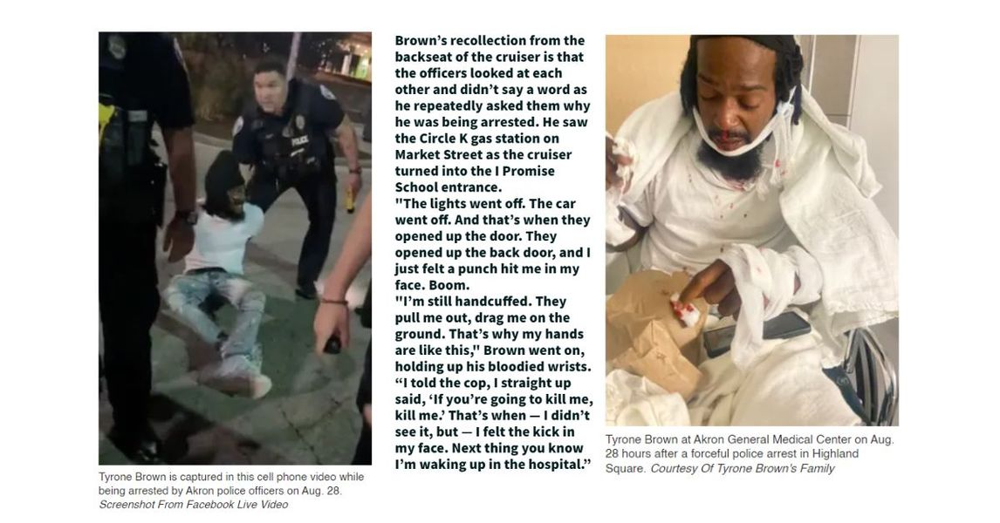

Timeline photos
The Tyrone Brown case might be even more important than the Jayland Walker case in Akron (Who was unarmed and was shot over 40 times by Akron police).
There are some BIG claims on both sides.
The police are saying they did nothing wrong. Rev. Ray Greene of Akron's Freedom BLOC and Jayland Walker's attorney, Bobby DiCello (who is now Tyrone Brown's attorney) say the police took Tyorone away from the scene, took him to I Promise school and beat him unconscious.
The police say there are video footage of the entire time Tyrone Brown was in their custody.
If the police are correct and Tyrone made it up, that is likely going to seriously damage the movement of police reform and the validity of injustice against Black people (like yelling rape and lying about it.)
If Tyrone is correct and the police are lying then we will get (and rightfully deserve) another uprising in Akron.
Maybe there is a third truth between the two.
I don't know Tyrone. So I can't comment on his character.
But I do know Rev. Ray Greene. He's an important player in social justice here in Akron. He clearly believes Tyrone. Which makes me want to believe Tyrone. (If Tyrone is lying this fact makes the event even more tragic for the movement.)
KNOW THIS: Akron is a serious city. As serious as Baltimore or Detroit. We are living in serious times that could have very serious consequences for the political landscape locally and civil rights that could shape the entire country.
Tyrone sounds authentic. I just pray he's not lying.